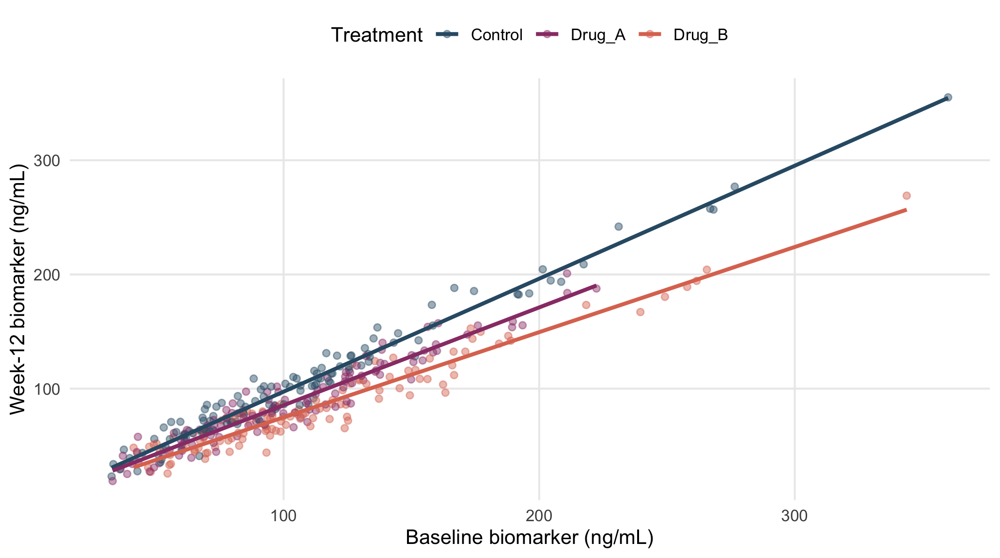
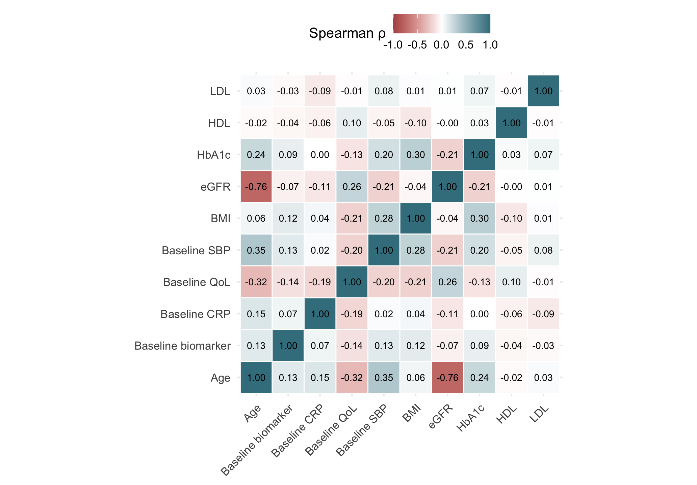

Correlation measures the strength and direction of association between two continuous variables.
| Method | Measures | Useful when |
|---|---|---|
| Pearson | linear association | the relationship is approximately linear without influential outliers |
| Spearman | monotonic rank association | data are skewed, contain outliers, or the relationship is not strictly linear |
Pearson’s correlation coefficient measures the strength and direction of a linear relationship:
\[ r=\frac{\sum_i(x_i-\bar{x})(y_i-\bar{y})} {\sqrt{\sum_i(x_i-\bar{x})^2\sum_i(y_i-\bar{y})^2}}. \]
It ranges from \(-1\) to \(1\). Values closer to \(-1\) or \(1\) indicate stronger linear association.
cor.test(~biomarker_baseline_ng_mL+biomarker_week12_ng_mL,
data=dat,method="pearson")
#>
#> Pearson's product-moment correlation
#>
#> data: biomarker_baseline_ng_mL and biomarker_week12_ng_mL
#> t = 52, df = 347, p-value <0.0000000000000002
#> alternative hypothesis: true correlation is not equal to 0
#> 95 percent confidence interval:
#> 0.9286 0.9526
#> sample estimates:
#> cor
#> 0.9418A scatterplot should accompany Pearson correlation to assess the form of the relationship and identify influential observations.
ggplot(dat,aes(biomarker_baseline_ng_mL,biomarker_week12_ng_mL,colour=treatment_arm)) +
geom_point(alpha=.45,na.rm=TRUE) +
geom_smooth(method="lm",se=FALSE,na.rm=TRUE) +
scale_colour_manual(values=pal) +
labs(x="Baseline biomarker (ng/mL)",y="Week-12 biomarker (ng/mL)",colour="Treatment")
Figure 15.1: Baseline and week-12 biomarker with a linear fit.
Spearman correlation uses the ranks of the observations rather than their original values. It measures the strength and direction of a monotonic relationship and is useful for skewed data.
Because CRP is strongly right-skewed, Spearman correlation is appropriate for describing the association between baseline and week-12 CRP.
cor.test(~crp_baseline_mg_L+crp_week12_mg_L,
data=dat,method="spearman",exact=FALSE)
#>
#> Spearman's rank correlation rho
#>
#> data: crp_baseline_mg_L and crp_week12_mg_L
#> S = 264568, p-value <0.0000000000000002
#> alternative hypothesis: true rho is not equal to 0
#> sample estimates:
#> rho
#> 0.9582A strong Pearson or Spearman correlation does not imply that two measurements agree, nor does it establish causation.
A correlation matrix summarizes associations among several continuous variables. Here, Spearman correlations are used because some variables are skewed.
cor_vars <- dat |> transmute(
Age=age_years,BMI=bmi_kg_m2,`Baseline SBP`=sbp_baseline_mmHg,
HbA1c=hba1c_pct,LDL=ldl_mg_dL,HDL=hdl_mg_dL,eGFR=egfr_mL_min_1_73m2,
`Baseline CRP`=crp_baseline_mg_L,
`Baseline biomarker`=biomarker_baseline_ng_mL,
`Baseline QoL`=qol_baseline_0_100)
cm <- cor(cor_vars,use="pairwise.complete.obs",method="spearman")
round(cm,2)
#> Age BMI Baseline SBP HbA1c LDL HDL eGFR Baseline CRP Baseline biomarker Baseline QoL
#> Age 1.00 0.06 0.35 0.24 0.03 -0.02 -0.76 0.15 0.13 -0.32
#> BMI 0.06 1.00 0.28 0.30 0.01 -0.10 -0.04 0.04 0.12 -0.21
#> Baseline SBP 0.35 0.28 1.00 0.20 0.08 -0.05 -0.21 0.02 0.13 -0.20
#> HbA1c 0.24 0.30 0.20 1.00 0.07 0.03 -0.21 0.00 0.09 -0.13
#> LDL 0.03 0.01 0.08 0.07 1.00 -0.01 0.01 -0.09 -0.03 -0.01
#> HDL -0.02 -0.10 -0.05 0.03 -0.01 1.00 0.00 -0.06 -0.04 0.10
#> eGFR -0.76 -0.04 -0.21 -0.21 0.01 0.00 1.00 -0.11 -0.07 0.26
#> Baseline CRP 0.15 0.04 0.02 0.00 -0.09 -0.06 -0.11 1.00 0.07 -0.19
#> Baseline biomarker 0.13 0.12 0.13 0.09 -0.03 -0.04 -0.07 0.07 1.00 -0.14
#> Baseline QoL -0.32 -0.21 -0.20 -0.13 -0.01 0.10 0.26 -0.19 -0.14 1.00cm_long <- as.data.frame(cm) |>
tibble::rownames_to_column("x") |>
pivot_longer(-x,names_to="y",values_to="rho")
ggplot(cm_long,aes(x,y,fill=rho)) +
geom_tile(colour="white",linewidth=.4) +
geom_text(aes(label=sprintf("%.2f",rho)),size=3) +
scale_fill_gradient2(low="#B45252",mid="white",high="#3F7F8D",limits=c(-1,1)) +
coord_equal() +
labs(x=NULL,y=NULL,fill="Spearman ρ") +
theme(axis.text.x=element_text(angle=45,hjust=1))
Figure 15.2: Spearman correlation matrix for selected baseline variables.
Correlation shows whether two variables move together, but it does not show that one causes the other.
A strong correlation between baseline and follow-up measurements may indicate that baseline is useful to include in a regression model. However, the treatment effect is estimated by the regression model, not by the correlation coefficient.